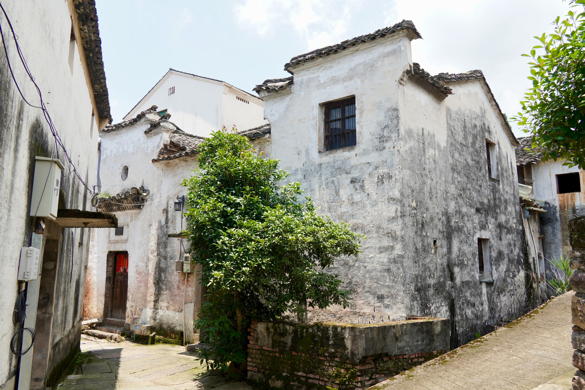
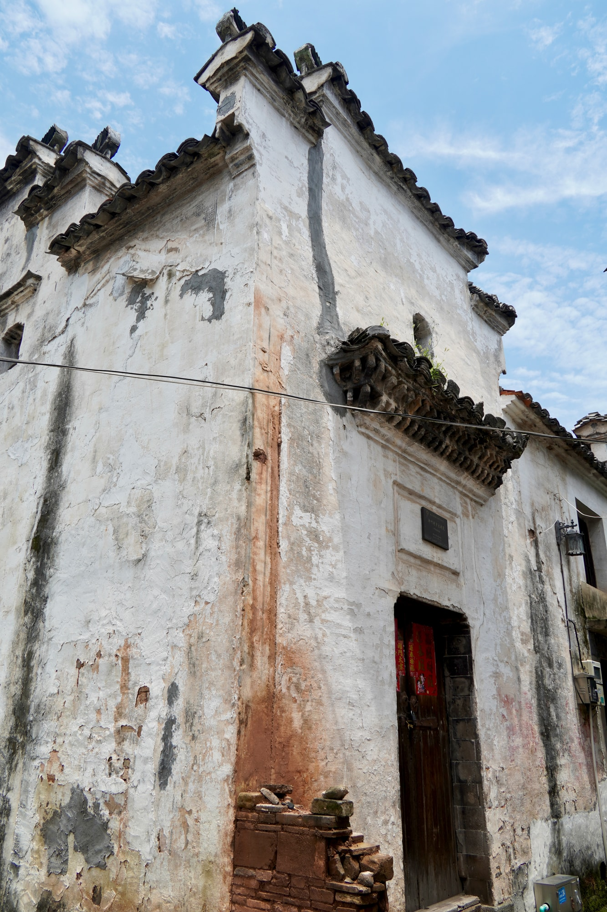

省保传统民居
周边环境中的一座老宅叶秋标民居
叶秋标民居是省级文物保护单位“新叶村乡土建筑”的组成部分。由周边环境走向侧旁入口，空间从村落尺度逐渐收拢到门前。
01
住宅所在的村落环境

稍远处望去，住宅、邻近屋舍与道路一同进入视野。老宅并不孤立，而是顺着聚落肌理与周围空间自然衔接。
02
侧旁入口

来到侧面，入口与附近通行空间形成明确联系。由周围屋舍走到门前，尺度也从村落收拢到一处具体住宅。

叶秋标民居是省级文物保护单位“新叶村乡土建筑”的组成部分。由周边环境走向侧旁入口，空间从村落尺度逐渐收拢到门前。

稍远处望去，住宅、邻近屋舍与道路一同进入视野。老宅并不孤立，而是顺着聚落肌理与周围空间自然衔接。

来到侧面，入口与附近通行空间形成明确联系。由周围屋舍走到门前，尺度也从村落收拢到一处具体住宅。